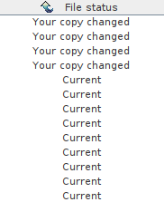

File Status
The QVCS-Enterprise client application has a 'File Status' column that makes it very easy to see whether your local workfiles are up to date. Clicking on the 'File status' column header will sort the file list by file status as shown here.

There are 7 possible values for the file status of an individual file:
| Current | A File status of 'Current' means that your local workfile matches the newest revision checked in to the server. |
| Stale | A File status of 'Stale' means that your local workfile is not as new as the newest revision on the server, i.e. your local copy is stale. Some other user has checked in a new revision since you last fetched your workfile from the server, or the revision of the workfile that you have is not the newest revision of that file that is available from the server. |
| Your copy changed | A File status of 'Your copy changed' means that you have made edits to your local workfile. It also means that no one else has made changes to that file since you fetched the revision that you are making changes to. |
| Merge Required | A File status of 'Merge Required' means that your workfile is different than the newest revision on the server, and that there may have been other users who have checked in changes since you fetched your revision of workfile -- i.e. merges may be required. |
| Different | A File status of 'Different' means that your workfile is different than the latest revision on the server. Whether those differences are the result of edits you have made, or whether they are the result of other users checking in new revisions cannot be determined. |
| Missing | A File status of 'Missing' means that the local workfile for the listed file does not exist. You need to 'get' the file in order to have a local copy. |
| Not controlled | A File status of 'Not controlled' means that the workfile is not under version control -- i.e. there is no revision history for the workfile on the server. |
|